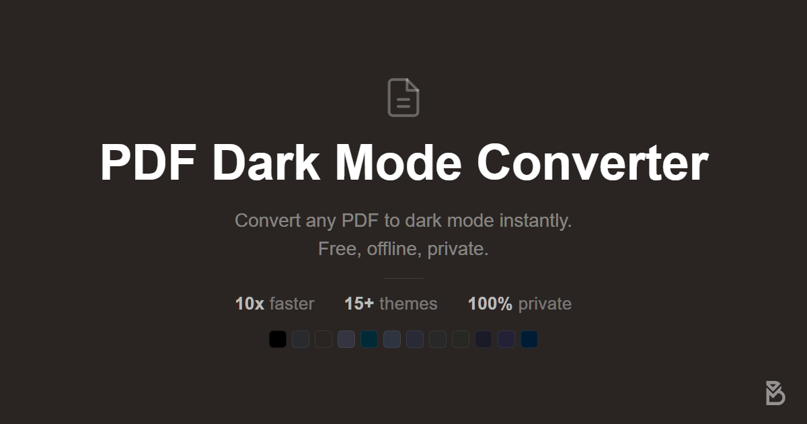
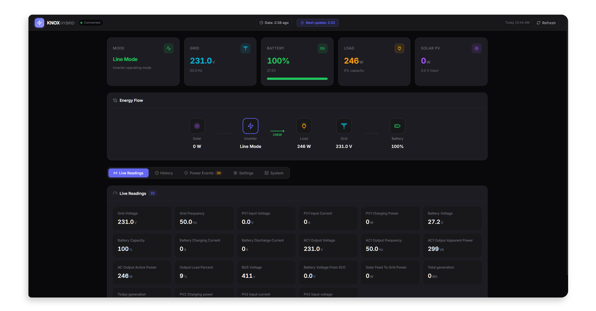
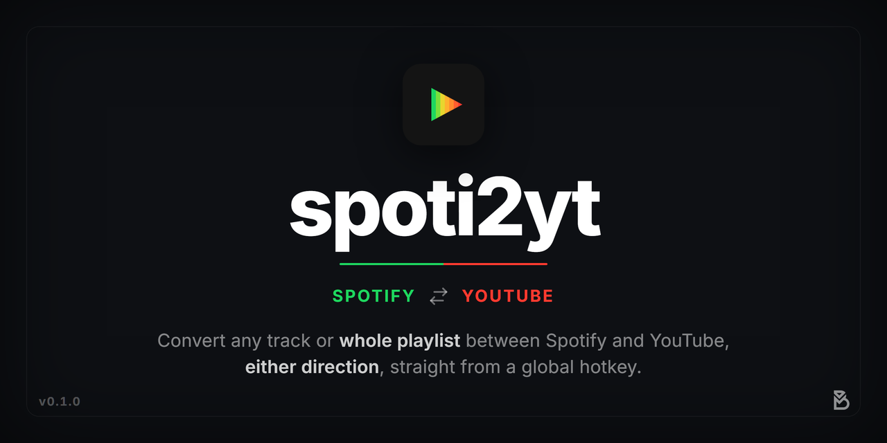
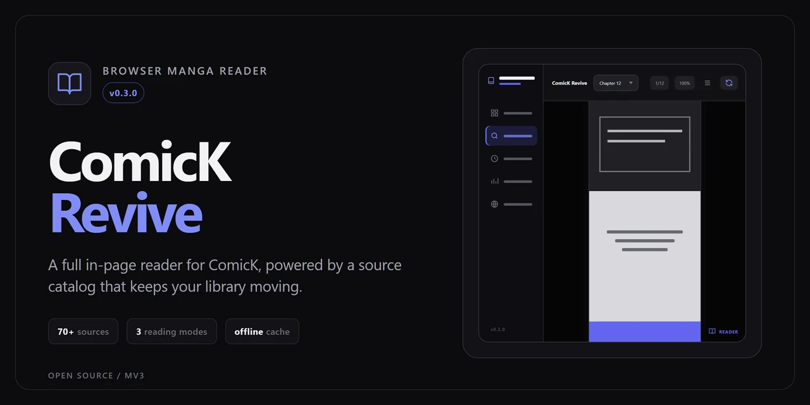
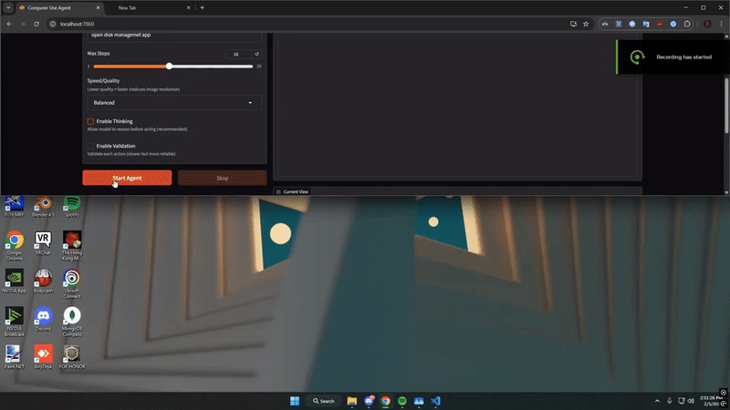
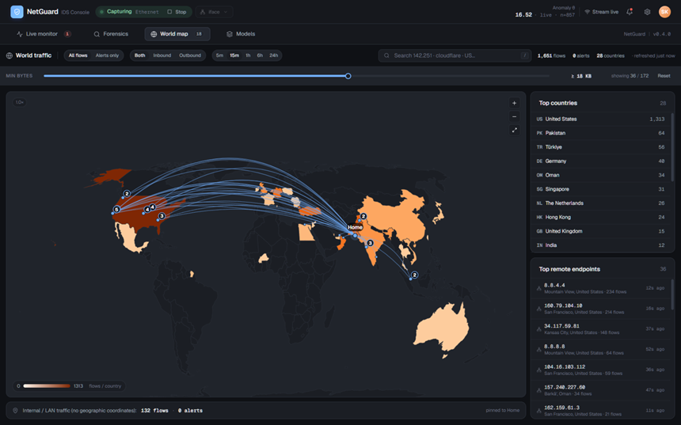

★31PDF DARK MODE CONVERTER
The privacy-first, browser-native PDF theming tool. It offers 16+ themes, GPU acceleration, and fully offline processing: a 50-page PDF in seconds, without files leaving the device.
CS STUDENT · SOFTWARE BUILDER · 3D ARTIST · ISLAMABAD 🇵🇰
Turning theory into practice.
I build local-first tools, reverse-engineer the systems I depend on, and make 3D art. The common thread: fast, private, useful work, with source available by default.
Open to internships, freelance & collaborations
I'm BrAtUkA, a computer-science student and developer based in Islamabad.
I work across local-first web apps, native desktop tools, and security or reverse-engineering projects. Most of what I've built began as something I needed and couldn't find. I made it, then published the source.
Lately I've spent most of my time in Rust and local-first tooling. Other than code, I share my 3D experiments and artwork on Instagram ↗.

★31The privacy-first, browser-native PDF theming tool. It offers 16+ themes, GPU acceleration, and fully offline processing: a 50-page PDF in seconds, without files leaving the device.

★11A lightweight Rust + Tauri system-tray app that periodically monitors Knox solar-inverter data, with a dashboard, history, and alerts when new provider data indicates an outage.

★0A Windows tray app that converts tracks and playlists between Spotify and YouTube in either direction using global hotkeys.

★1A Chromium extension that restores in-page reading on ComicK, with a 70+ source catalog, offline caching, library and history, and exact-position resume.

★4An experimental VLM-powered agent that controls your computer through natural language, with model inference running locally and no cloud API key required.

★1A semester-project network IDS combining XGBoost, anomaly and behavioural detection with MITRE ATT&CK mapping and a live forensics dashboard.
Currently open to internships, freelance & collaborations: tooling, reverse-engineering puzzles, or just to say hi.
bratuka@bratuka.dev ↗